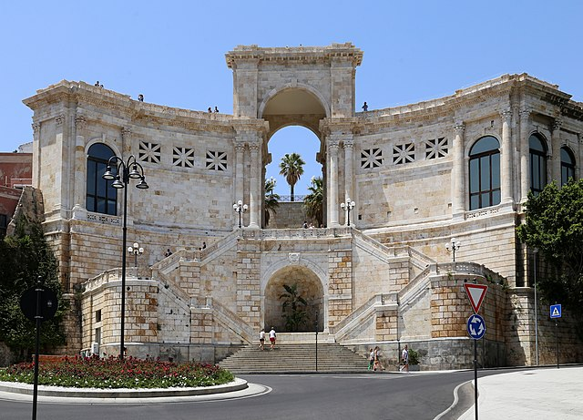

Attractions

Sella Del Diavolo - Devil's Saddle
Cagliari Area
Popular hiking trail.
Also known for extreme diving spots
Poetto Beach
Cagliari City
One of the most popular beach in Sardinia.
Right in the center of the city

Monte Urpinu Park
Cagliari City
Large Natural park place on the hill of the city.
It Hosts many different species of plants and animals.
